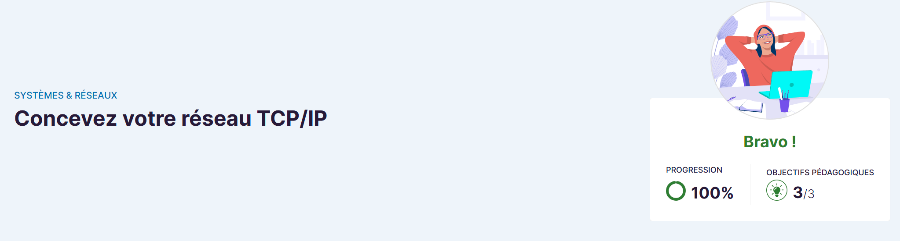

📘 Présentation de la formation
Dans cette formation, j'ai appris à utiliser le protocole TCP/IP, qui est à la base de toutes les communications sur les réseaux informatiques et essentiel pour assurer l'interconnexion des systèmes.
Plateforme : OpenClassRooms – Formation TCP/IP
🎯 Mes objectifs
- Prendre du savoir et du savoir-faire en liaison avec ma formation en BTS SIO
- Me servir lors de mon stage où au BTS
- Compétences qui me serviront dans mon futur professionnel
- Comprendre les bases de l’administration réseau pour mieux gérer des infrastructures complexes
- Savoir configurer et sécuriser un réseau local et étendu
- Apprendre à travailler avec des outils et technologies actuels (switches, routeurs, VLANs, etc.)
- Se préparer aux certifications professionnelles liées aux réseaux (comme Cisco CCNA, etc.)
❓ Pourquoi cette formation ?
- Acquérir des connaissances utiles et en lien avec mon cursus BTS SIO
- Appliquer ces compétences en environnement professionnel et lors de stages
- Renforcer ma compréhension des réseaux et de leur fonctionnement
- Préparer des certifications professionnelles reconnues
🛠️ Outils utilisés
- Navigateur web
- Cisco Packet Tracer
📌 Notions illustrées
Le protocole TCP/IP est la base de toutes les communications sur les réseaux informatiques. Il permet d’assurer l’interconnexion entre différents équipements tels que les ordinateurs, les serveurs et les périphériques réseau (switches, routeurs, etc.).
Dans une architecture réseau comme celle illustrée, TCP/IP joue un rôle central en permettant :
- La transmission des données entre les équipements (par exemple, entre le serveur et les postes clients).
- La segmentation et la gestion des données pour une communication fiable.
- L’identification des appareils grâce à leurs adresses IP uniques.
Cette architecture se compose d’un serveur, d’un routeur, de switches, et de plusieurs postes clients. Le protocole TCP/IP assure la communication entre tous ces appareils en définissant les règles nécessaires pour envoyer et recevoir des paquets de données efficacement.
Ainsi, la maîtrise de TCP/IP est essentielle pour concevoir, configurer et optimiser un réseau informatique capable de répondre aux besoins d’une organisation.

Modèles OSI & TCP/IP
Le modèle OSI et le modèle TCP/IP sont deux références fondamentales dans le domaine des réseaux.
Avantages du modèle TCP/IP :
- Il simplifie la communication en regroupant certaines couches du modèle OSI, comme les couches Application, Présentation et Session, en une seule couche Application.
- Il est universellement utilisé et standardisé, permettant ainsi l’interopérabilité entre différents appareils et systèmes.
- Grâce au protocole TCP, il offre une transmission fiable des données, assurant que les informations envoyées arrivent intactes à destination.
- Il est flexible et peut s'adapter à différents types de matériels et de réseaux.
Avantages du modèle OSI :
- Ce modèle divise les processus de communication en sept couches distinctes, rendant le dépannage et l’analyse des réseaux plus simples.
- Bien qu’il ne soit pas directement utilisé en pratique, il constitue une base théorique idéale pour apprendre et comprendre les réseaux.
- Chaque couche ayant un rôle spécifique, il favorise une approche modulaire de la conception des systèmes réseau.
Le modèle OSI est souvent utilisé pour l’enseignement des concepts réseau, tandis que le modèle TCP/IP s’applique directement à la communication sur Internet.

Dans un réseau utilisant le protocole TCP/IP, les cartes réseau jouent un rôle fondamental pour assurer la communication entre les appareils. Cette image illustre différents types de cartes réseau, leurs ports associés, leurs supports de transmission, et les normes générales qui les régissent.
Cartes réseau en cuivre :
- Utilisent un port RJ45.
- S’appuient sur des câbles en cuivre à paire torsadée pour transmettre les données.
- Norme : IEEE 802.3 (Ethernet), très répandue dans les réseaux locaux (LAN).
Cartes réseau optiques :
- Connectées via un port SFP (Small Form-factor Pluggable).
- Utilisent la fibre optique pour des transmissions sur de longues distances avec des débits élevés.
- Norme : IEEE 802.3z (Gigabit Ethernet sur fibre).


💪 Compétences développées
- Maîtrise des fondamentaux du protocole TCP/IP
- Configuration et gestion des équipements réseau (switches, routeurs)
- Compréhension des modèles réseau OSI et TCP/IP
- Sécurisation des réseaux locaux et étendus
- Utilisation d'outils de simulation comme Cisco Packet Tracer
- Capacité à diagnostiquer et résoudre des problèmes réseau
🔚 Conclusion
Cette formation m’a permis de mieux comprendre les protocoles fondamentaux du réseau, essentiels pour toute infrastructure informatique moderne. Grâce à ces acquis, je suis plus à l’aise pour intervenir sur des réseaux locaux ou étendus et me préparer aux certifications professionnelles du domaine.
Cette base solide constitue un atout majeur pour ma carrière dans l’administration des systèmes et réseaux.